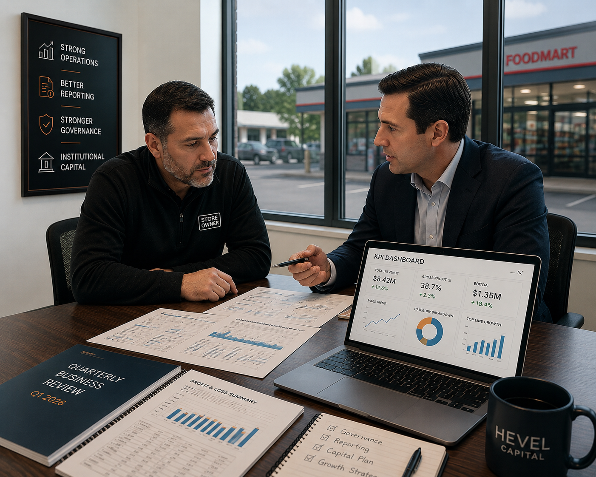

Weekly KPI Review
Weekly KPI snapshots deliver a clear view of operational performance, helping identify issues early and keep leadership aligned.

Hevel Capital created the NLG Framework to help bridge the gap between growth-oriented convenience store operators and capital providers through a focus on transparency, reporting, governance, and long-term alignment.
The objective of the NLG Framework is to help operators become institutional-ready while providing capital partners access to differentiated opportunities and ongoing oversight. It is not a marketing phrase — it is a structured process.

Many middle-market convenience store operators have strong businesses but lack the reporting infrastructure, governance standards, and capital markets expertise required to attract institutional capital. The NLG Framework was created to close that gap.
The NLG Framework focuses exclusively on convenience stores because of their historically resilient cash flows, fragmented ownership base, attractive acquisition opportunities, and ability to create value through operational execution and institutionalization.
A disciplined progression — each phase is measurable, each gate is earned.
Rigorous, structured evaluation of operators, financials, management, and portfolio quality — the foundation of every engagement.
Store-level P&Ls, KPI dashboards, quarterly reporting packets, and financial visibility built to institutional expectations.
Transaction structuring, capital partner introductions, investor materials, and ongoing communication.
Portfolio optimization, capital markets planning, growth strategy, and institutional readiness over the full hold.
Hevel Capital seeks to partner with growth-oriented operators that demonstrate strong operating fundamentals, a commitment to transparency, reporting discipline, growth potential, and alignment with long-term capital partners. Not every operator qualifies for the NLG Framework.
A consistent rhythm of reporting, planning, and decision support that keeps performance clear and actions aligned.
Weekly KPI snapshots deliver a clear view of operational performance, helping identify issues early and keep leadership aligned.
Comprehensive quarterly business reviews evaluate performance, track trends, measure progress, and support informed decision-making with capital partners.
Annual planning aligns long-term goals, capital priorities, growth initiatives, and strategic execution to create sustainable enterprise value.
Timely analysis and tailored decision materials support acquisitions, debt financing, capital expenditures, lease changes, refinancing, and other major operational events.
It's the system that allows capital partners and operators to build confidence over time.
Our OpCo Partnership Framework includes detailed processes around governance, reporting, property and risk reviews, insurance certificates, property tax assessments, lease compliance, capex, repairs, and environmental items.
We summarize these practices publicly-detailed materials are shared under NDA.
Hevel Capital remains involved through investor communications, reporting oversight, quarterly reviews, strategic advisory support, and ongoing operator engagement — creating long-term alignment between operators and capital providers.
The NLG platform is designed for sophisticated investors and capital partners who value transparency, governance, and durable returns.